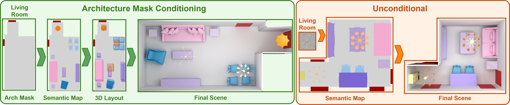

SemLayoutDiff: Semantic Layout Generation with Diffusion Model for Indoor Scene Synthesis
We present SemLayoutDiff, a unified model for synthesizing diverse 3D indoor scenes across multiple room types. The model introduces a scene layout representation combining a top-down semantic map and attributes for each object. Unlike prior approaches, which cannot condition on architectural constraints, SemLayoutDiff employs a categorical diffusion model capable of conditioning scene synthesis explicitly on room masks. It first generates a coherent semantic map, followed by a cross-attention-based network to predict furniture placements that respect the synthesized layout. Our method also accounts for architectural elements such as doors and windows, ensuring that generated furniture arrangements remain practical and unobstructed. Experiments on the 3D-FRONT dataset show that SemLayoutDiff produces spatially coherent, realistic, and varied scenes, outperforming previous methods.